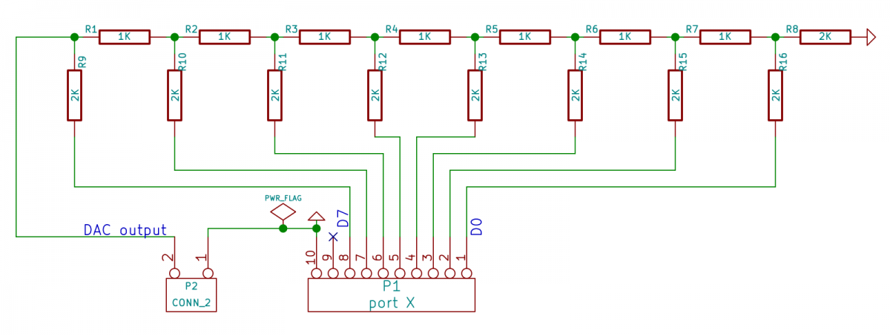

To
code in assembler, one should have some idea about the architecture of
the target hardware. It is enough to assume that the AVR
micro-controller appears to the programmer as a set of General Purpose
Registers (GPRs: R1 to R31), Special Functions Registers (SFRs) that
controls the peripherals, some data memory (2kbytes of SRAM for
Atmega32). All of them are in the data address space. We also have
Program memory and EEPROM in different address spaces.
To
code in assembler, one should have some idea about the architecture of
the target hardware. It is enough to assume that the AVR
micro-controller appears to the programmer as a set of General Purpose
Registers (GPRs: R1 to R31), Special Functions Registers (SFRs) that
controls the peripherals, some data memory (2kbytes of SRAM for
Atmega32). All of them are in the data address space. We also have
Program memory and EEPROM in different address spaces.
Assembly language programming involves moving data between GPRs, SFRs and RAM, and performing arithmetic and logical operations on the data.
We have four I/O ports (A,B,C and D, controlled by 12 SFRs) that can be used for providing input data to our programs and display the output. In order to do that, we need to use switches and LEDs connected to these ports. The following examples use the Digital Output Board (having 8 LEDs) to display program results. The figure shows the board plugged into port B.
Let us start with a small program shown below (immed.S is included in the examples provided.)
.section .text ; denotes code sectionClicking on 'Assemble' and then 'Upload' should make all the LED light up.
General Purpose Registers
We are already familiar with the Special Function Registers (including DDRB and PORTB) that were used to configure and control various features of the microcontroller. In addition to these ATmega32 has 32 general purpose registers (32 here is a coincidence. The 32 in ATmega32 refers to 32 kB of flash memory available for programming. All AVR micro-controllers, even ATmega8 or ATmega16 have 32 GPRs).
Any numerical value that needs to be used in the program needs to be first loaded into one of the GPRs. So, if you want to load 0xff into DDRB, you first need to load 0xff into a GPR and then copy the content of the GPR into DDRB. This might seem like an unnecessary restriction to us who have been used to writing DDRB=0xff in C, but it is a necessary consequence of the streamlined hardware design of the processor which C hides from us.
Even though the 32 registers R0-31 are called "general purpose", there are special uses for some of them, which will be discussed later.
Instructions
What we could do intuitively with an assignment operator (=) in C requires the use of more than one instruction.
LDI (Load Immediate) : used to load a constant value to one of the registers R16-31 ( that's a restriction. load immediate can't work with R1 ro R15)
OUT (output to any Special Function Register) : The SFRs are mapped to the locations 0 to 3Fhex. 0x17 and 0x18 are the I/O mapped addresses of the registers DDRB and PORTB respectively.
The SFRs are also mapped into the memory space to locations 20hex to 5Fhex. Due to this reason you can use STS (Store Direct to SRAM) instruction instead of OUT but to a different address. OUT 0x17, R16 and STS 0x37, R16 achieves the same result but the former is compact.
Adding two numbers
The code listed below (add.S) adds two numbers and displays the result on the LEDs connected to port B. Instead of remembering the addresses of DDRB and PORTB, we have included the file 'avr/io.h' that contains all the Register names. Naming the program with .S (capital S instead of small s ) invokes the pre-processor, that also allows expressions like (1 << PB3) to be used. (add.S)
#include <avr/io.h>
.section .text ;
denotes code section
.global main
main:
LDI R16,
255 ; load R16 with 255
STS DDRB, R16 ;
set all bits of port B as output
LDI R16,
2 ; load R16 with 2
LDI R17,
4 ; load R17 with 4
ADD R16, r17 ; R16
<- R16 + R17
STS PORTB,
R16 ; result to port B
.END
Running this program lights LEDs D2 and D3.
The Status Register
Arithmetic and logical operations will affect the status flag bits like Carry, Zero, Negative etc. Refer to Atmega32 databook for complete information.

Let us modify the previous program to evaluate 255 + 1. The result will be shown on port B and the status flag register SREG on port A. (carry.S)
#include <avr/io.h>
.section .text ;
denotes code section
.global main
main:
LDI R16,
255
STS DDRB, R16
; All bits of port B as output
STS DDRA, R16
; All bits of port A as output
LDI R17,
1
; load R17 with 1, R16 already has 255
ADD R16,
R17 ; R16 <- R16 + r17
STS PORTB,
R16 ; Sum to port B
LDS R16,
SREG ; Load the Status
register
STS PORTA,
R16 ; display it on port A
.END
The Carry, Zero and Half Carry bits will be set on port B.
Exercise 1: Load R16 and R17 with two numbers and study the results and status flags generated by the following operations.
COM R16 ; Complement NEG R16 ; 2's complement TST R16 ; test for zero or minus AND R16, R17 ; bitwise AND OR R16, R17 ; bitwise OR ADD R16, R17 ; summing Exercise 2: Add a number and it's 2's complement, do the same with 1's complement and compare the results LDI R16, 10 ; load number MOV R17, R16 NEG R16 ; 2's complement ADD R17, R16Moving Data
To manipulate data, we need to bring them into the GPRs (R1 to R31) and the results should be put back into the memory locations. There are different modes of transferring data between the GPRs and the memory locations, as explained below.
Register Direct: MOV R1, R2 ; copies R2 to R1 . Two GPRs are involved in this. There are also operations that involves a single register like, INC R1
I/O Direct : For moving data between the GPRs and the SFRs, since the SFRs can be accessed as I/O addresses. OUT 0x17, R1 copies R1 to DDRB. Please note that the I/O address is 20hex less than the memory mapped address (0x37) of the same SFR. (io-direct.S)
Immediate : This mode can be used for transferring a number to any register from R16 to R31, like : LDI R17, 200. The data is provided as a part of the instruction. (immed.S)
Data Direct: In this mode, the address of the memory location containing the data is specified, instead of the data itself. LDS R1, 0x60 moves the content of memory location 0x60 to R1. STS 0x61, R1 copies R1 to location 0x61. (data-direct.s)
Data Indirect : In the previous mode, the address of the memory location is part of the instruction word. Here the address of the memory location is taken from the contents of the X, Y or Z registers. X, Y and Z are 16 bit registers made by combining two 8 bit registers (X is R26 and R27; Y is R28 and R29; Z is R30 and R31. This is required for addressing memory above 255. (data-indirect.s)
LDI R26, 0x60 ; address of location 0x0060 to X LDI R27, 0x00LD R16, X ; load R16 with the content of memory location pointed to by X
This mode has several variations like pre and post incrementing of the register or adding an offset to it. Refer to the data book for details.
Programs having Data
Programs generally have variables, sometimes with initialized data. The expects them inside the .data segment. The following example shows how to access a data variable using direct and indirect modes. (data-direct-var.S)
#include <avr/io.h>The lines .global __do_copy_data and .global __do_clear_bss tells the assembler to insert code for initializing the global variables, which is a must.
Jumps and Calls
The programs written so far has an execution flow from the beginning to the end, without any branching or subroutine calls, generally required in all practical programs. The execution flow can be controlled by CALL and JMP instructions. (call-jump.S)
#include <avr/io.h> .section .text ; code section startsOutput of the Assembler
The code we write are translated by the assembler into machine language instructions. Then it is passed on to the Linker to decide the locations to which code and data are to be stored before executing it. The code is stored into the Program memory. Even though the processor starts from location zero on a reset, the linker places the addresses of the interrupt vectors there, then some initialization code and after that our code is placed. You can explore the .lst output to know the details.
Interrupts, the asynchronous CallsThere are situations where the uC should respond to external events, stopping the current program temporarily. This is done using Interrupts, that are external signals, either from the I/O pins or from from some of the peripheral devices. On receiving an interrupt signal, the processor stores the current Program Counter to the memory location pointed to by the Stack Pointer and jumps to the corresponding interrupt vector location (For example, the processor will jump to location 0x0002 (0x0004 if you count them as bytes), if external interrupt pin INT0 is activated, provided the interrupt is enabled by the processor beforehand. (interrupt.S). Connect PD2 to ground momentarily and watch the LEDs.
.section .text ; denotes code section .global main
main:
LDI R16, 255
OUT 0x17,
R16 ; DDRB
OUT 0x12, R16 ;
enable Port D pull-up resistors
LDI R16, 0x40 ; enable
OUT
0x3b, r16 ; interrupt INT0
CLR R1
SEI
; enable interrupts globally
loop:
RJMP
loop ;
infinite loop
.end
A Ramp Generator using R-2R DAC
Connect an R-2R Digital to Analog Converter to port B, as shown below and run the program ramp-on-R2RDAC.S
|  |  |